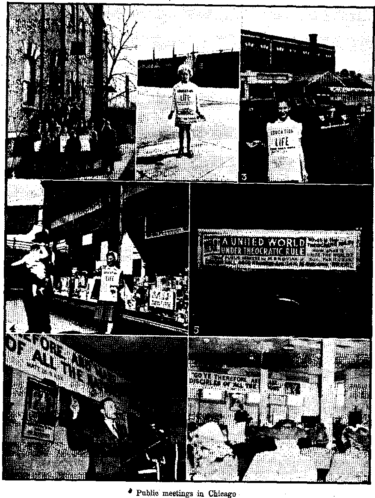

Contents
Blasphemy Against the Bible by a Cult
Bible Shrouded in Dead Language
The Hierarchy’s Unenviable Record '
Blasphemes Bible as Unsafe Guide
\ “Much Goods Laid Up for Many Years” 11 i Massacres of the Spanish Masons
* Berries in and out of the Bible '
Cats Aid and Interest Humanity
“Thy Word Is Truth”
U. S. Plants Shipped to Russia
Caring for the Insane in the Empire State 22 If She Had Only Put Those Eleven Coins
Jewish Family Hidden Four Years
Presenting “This Gospel of the Kingdom” Effective Speaking
In the Days of “Good Queen Bess”
Published every other Wednesday by
WATCHTOWER BIBLE AND TRACT SOCIETY, INC1
117 Adams St., Brooklyn 1, N. Y.t U, S. A.
OFFICERS
President N. H. Knorr ’
Secretary W. E- Van Amburgh
Editor Clayton J. Woodworth
Five Gents a Copy
11 a year in the United States $1.26 to Canada and all other countries
NOTICE TO SUBSCRIBERS
Remittances! For your own safety, remit by postal or express money order. When coin or currency is lost in the ordinary mails, there is no redress. Remittances from countries other than those named below may be made to the Brooklyn office, but only by International postal money order*
Receipt of a new or renewal subscription will be acknowledged only when requested. Notice of Expiration is sent with the journal one month before subscription expires. Please renew promptly to avoid Joss of copies* Send change of address direct to us rather than to the post office. Your request should reach us at least two weeks before the date of issue with which it Is to take effect. Send your old as well as the new address. Copies will not be forwarded by the post office to your new address unless extra postage is provided by you.
Published also in Greek, Portuguese, Spanish, and Ukrainian*
OFFICES FOR OTHER COUNTRIES
England 34 Craven Terrace, London, W. 2
Australia 2 Homebush Rd., Strathfield, N. S. W. South Africa 623 Boston House, Cape Town
Mexico Calzada Melchor Ocampo 71, Mexico, D. F. Brazil Rua Licfnlo Cardoso 330, Rio de Janeiro
Argentina Calle Honduras 5646-48, Buenos Aires Entered as second-class matter at Brooklyn, N. Y., under the Act of March 8, 1879.
“Should Auld Acquaintance”
♦ Now that the indefensible ban on the entry of the Kingdom literature into this country has been lifted, one looks forward with the keenest of pleasure to renewing acquaintance with our old friend Consolation. ’ ,
It is well over two years since its periodic visits ceased; and how often in the meantime have I thought I would like to see a copy! In passing I would say that I consider it would have been more gracious had the government ban been lifted voluntarily and not under pressure. But let that pass. The important thing is that the embargo is at length removed.
I well remember that among the last copies I received was the account of the difficulties in connection with the burial of the Society’s late president, J. F. Rutherford. Finally, I recall, legal and official bodies would not consent to the interment of the body of God’s faithful servant in the private grounds at San Diego, California. This is brought forcibly to my mind as I write, for the British Press is full of the passing away of the American president, F. D. Roosevelt. Staring me in the face is the following paragraph: “The president’s body will be taken to his Hyde Park estate and the burial will take place in. the beautiful ■ garden surrounded by roses in the grounds of the estate.”
One cannot help noticing the discrimination shown Jay officials in these two cases. How good to know that man’s intolerance cannot extend into Jehovah’s new world, now in process of complete establishment! All hail the glorious Kingdom of justice and righteousness!
And now I eagerly await my hist copy of that bright herald of the Theocratic rule, that journal of “faith, hope and courage”, our old-time friend, Consolation.—F. W. Freer, England.
“And in His name shall the nations hope.”—-Matthew 12:'21, A.5.V.
Volume XXVI Brooklyn, N. Y,, Wednesday, June 20, 1945 Number 672
A UNITED world is the desire of all honest people today, a world of peace and tranquillity. To this end plans, agreements and proposals are now being drafted; security leagues, unions and parleys are being held. An international bill of rights as a protection against social and religious discrimination is also envisioned. Emphasis is particularly placed on the need for a spiritual and moral reconstruction. Hence special days ' and hours for prayer have been urged by such organizations as the American Legion and Federal Council of Churches. There cannot, however, be a moral and spiritual regeneration without the Bible. And so a resolution has been introduced which proposes an annual season for the reading of the Bible. Thus we hear the mingled voices of forty or more nations as they chant together for national security and international peace with universal unity.
But over and above this mixed chorus is heard a tin horn that utters a rasping and discordant sound. It is blown by that old and contentious organization, the Roman Catholic Hierarchy, and it indeed sends forth a sour note that does not harmonize with the melody being hummed by the rest. That religious cult recently called the Bible the “Book of Disunity'’.! In doing so she manifestly is out of tune with all others who are working and toiling for peace and unity.
The Catholic Hierarchy seems not only anxious and willing to besmirch and malign Jehovah’s name and Word but also willing to pay the regular commercial rates of the daily press for the op-
portunity to blaspheme the Holy Bible. In the St. Louis Post-Dispatch, Sunday, December 17, 1944, in a paid advertisement sponsored by the Knights of Columbus appeared the following:
The World’s Best Seller . The Book of Disunity
Nearly'sixteen hundred years ago, the Catholic Church gave the Bible to the world. Acting by virtue of the authority conferred on her by Christ, she said then as she says today that the Bible contains the inspired word of God. For more than a thousand years thereafter, her monks copied by hand on vellum and parchment the sacred words of Holy Scripture, and millions of the faithful read these words in Catholic churches throughout all Christendom.
But in the sixteenth century, a political -religious revolution got,under way in Germany. Unwilling to obey the clearly-defined teachings of Christ and His Church, self-opinionated men set up new religions of their own invention. It was at that time that the Bible—and the Bible only—-was offered as the sole guide in all matters of religious belief. . But these self-styled “reformers” soon found that their Bible-only theory would not stand close examination. Many books of the Bible clearly contradicted their teachings. To meet this situation, they not only removed several of the inspired books from their Bibles, but made changes in the texts of many others, adding here, subtracting there, altering somewhere else.
The resulting confusion was bedlam itself. Even the “reformers” were appalled. Martin Luther, who, shortly after his excommunication from the Church, had declared that the Bible could be interpreted by anyone, “even by the humble miller’s maid, nay by a child of nine,” lived to write these rueful words:
"There are as many sects and beliefs as there are heads. This fellow will have nothing to do with baptism; another denies the sacrament; a third believes that there is another world between this and the last day. Some ■ teach that Christ is not God; some say this, some that. There is no rustic so rude but that, if he dreams or fancies anything, it must be the whisper of the holy ghost, and he himself ' a prophet." (Grisar, Luther, iv, 386-407)
The plain fact is that the Bible, like the Constitution of the United States, demands an authoritative interpreter. Just as the Supreme Court, of the United States is the authorized interpreter of the Constitution, so the Catholic Chureh alone is the authorized interpreter of the Bible. Preserver and custodian of the Bible through the centuries, she interprets it in the name and with the authority of Jesus Christ, who commissioned the Catholic Church alone to “teach ye all nations, baptizing them in the name of the Father, and of the Son, and of the holy ghost; teaching them to observe all things whatsoever I have commanded you: and behold I am with you all days, even to the consummation of the world.” (Matt. 28:19, 20)
If you would like to know more about the Bible, why it is not clear to all, why it does not contain all of Christ’s teachings, and why it alone is not a safe guide in religion, write today for an interesting 16-page pamphlet that throws clear light upon these and other Bible questions. This pamphlet will be sent to you promptly, without charge or obligation. Just ask for Free Pamphlet No. 58.
In the interests of unity and with a pure love for Jehovah God’s Word, the Bible, let us review the statements and “arguments” of the above singular piece of mischief. _
Bible Shrouded in Dead Language
The opening words, “Nearly sixteen hundred years ago, the Catholic Church gave the Bible to the world,” takes us back in history to the fourth century, when the Roman Catholic Church was first established in Constantine’s day. At that time the Bible was available in the languages spoken by the common people, such as Greek, Aramaic, and Italic. Jerome, being encouraged by Pope Da-masus I, began the translation of the Bible into Latin in A.D. 382 and in time that Latin Vulgate version gradually replaced the other versions in the churches. However, as time passed Latin ceased to be the language of the common 'people. This popular trend away from the Latin suited the ambitious Roman Catholic clergy^ and enabled them to keep the people in ignorance of the Bible’s teachings. The iniquitous Hierarchy had discovered “dangers to the common mind” in Bible reading, and now that the Latin Vulgate was no longer understood by the common people she selfishly refused to bring forth further translations in the vernacular. During these centuries, then, it can be said that the magnanimous “Catholic Church gave the Bible to the world” in a dead language that could be read only by her clergy. This lack of the Bible in their common tongue made the people dependent upon the educated clergy and subjected them to the private interpretation as put upon the Scriptures by such clergy. Thus it was that the long black night of the Dark Ages fell as a thick veil over the intelligence of the whole world. For a thousand years men lived in the mire and slime of superstition, for they knew not how to read the Bible.
During that thousand-year blackout, this article says, the monks of the Catholic church “copied by hand on vellum and parchment the sacred words of Holy Scripture”. It is true that her monks made copies of the Bible, but always in the dead Latin so that the common people could not read it. Copies of these manuscript Bibles in museums show that those monks spent a great deal of time ornamenting and decorating the pages of such copies with extravagant frills that added nothing to their intrinsic value. The result was that copies cost many thousands of dollars and hence their circulation was restricted. How much better would it have been if those monks had spent their , time translating the Latin text into the language of the day.
Nor does the fact that her monks made copies of the Bible argue that such were preservers of the Bible. The scribes of Jesus7 day made some copies of the Hebrew canon of the Scriptures, but that does not argue that they made the Bible or were its creators, or that they preserved the Bible. Those very scribes opposed Jesus and were the Devil’s instruments to make null and void the commandments of God by the traditions of men, which traditions also those scribes copied and wrote. Thus they hid from the people the true meaning of the inspired Scriptures. (Mark 7:1-13) The same thing is true of the copyist monks in the religious Catholic system down to the fifteenth century A.D. It was during those years that “purgatory” was invented, since there was no allusion to such a place even in the Latin Bible. Says the eminent Catholic authority, Cardinal Gibbons, on the subject of “purgatory”: “This interpretation is not mine (nor is it found in the Bible]. It is the unanimous voice of the Fathers of Christendom.” It was only “asserted by the Council of Trent”, not proved. (Faith of Our Fathers, 94th ed., pages 213, 210) It was purely a fabrication supported only by the writings of those monks of the Dark Ages who apparently had too much time on their hands.
■ Millions in Darkness
If it were true as above claimed that “millions of the faithful read these words [of Holy Scripture] in Catholic Churches throughout all Christendom”, then there would have been no Dark Ages of ignorance, superstition and poverty. The masses who gave up their hard-earned substance to the profligate clergy never read Isaiah 55:1,2 in the Latin 'Vulgate: “All you that thirst, come to the waters: and you that have no money make haste, buy, and eat: come ye, buy wine and milk without money, and without any price. Why do you spend money for that which is not bread, and your labour for that which doth not satisfy you?” If millions had read that the soul is not immortal but dies, and that such do not suffer after death, for they know not anything, then it would have been impossible to carry on the “purgatory” racket. “The soul that sinneth, the same shall die. For the living know that they shall die, but the dead know nothing.” (Ezekiel 18:4; Ecclesiastes 9: 5, Douay translation of the Latin Vulgate) Is it reasonable to suppose that millions read Jesus’ instruction that they should pray at home instead of paying money to pray in a church building? “And when ye pray, you shall not be as the hypocrites, that love to stand and pray in the synagogues [churches] and corners of the streets, that they may be seen by men: Amen I say to you, they have received their reward. But thou when thou shalt pray, enter into thy chamber, and having shut the door, pray to thy Father in secret: and thy Father wTho seeth in secret will ’ repay thee.”—Matthew 6:5,6, Douay.
Did millions read how the Latin Catholic Bible condemns idolatry and image worship ? “Thou shalt not make to thyself a graven thing, nor the likeness of any thing that is in heaven above, or in the earth beneath, nor of those things that are in the waters under the earth. Thou Shalt not adore them, nor serve them.” “I am the Lord your God: you shall not make to yourselves any idol or graven thing, neither shall you erect pillars, nor set up a remarkable stone in your land, to adore it: for I am the Lord your God.” “Let them be all confounded that adore, graven things, and that glory in their idols.” (Exodus 20: 4, 5; Leviticus 26:1; Psalm 96: 7, Douay) Is it true that “millions of the faithful read” in the Latin Vulgate, “Call none your father upon earth; for one is your father, who is in heaven” (Matt. 23:9, Douay) 1 If millions had
read these or other portions of the Holy Scriptures, then they would not have been victims of priestcraft. No, millions of the common people never read these great truths in the Bible; for if they had there undoubtedly would have been no ' need for the Reformation that followed.
1
'The Reformation
The Reformation of'the sixteenth century has been the main howd of the Hierarchy ever since then. This is the old "bone” that the above article is picking on when it says, “Unwilling to obey the clearly-defined teachings of Christ and His Church, self-opinionated men set up new religions of their own invention/’ That is the truth turned upside down and put in reverse, as unbiased history of the time shows. It was because men were willing “to obey the clearly-defined teachings of Christ” that they broke away from that degenerate, immoral and corrupt institution with headquarters in Rome.
“It was -at that time that the Bible— .and the Bible only—was offered as the sole guide,” so moan the modern-day priests of Baal. Very true. Those reformers began to throw away the traditions of men and give heed to the apostle Raul’s warning, “Beware lest any man cheat you by philosophy, and vain deceit; according to the tradition of men, according to the elements of the world, and1 not according to Christ.” (Colos-sians 2:8, Douay) Those sincere and honest men wondered why they had not been told the truth as expressed in 2 Timothy 3:16,17 {Douay): “All scripture, inspired of God, is profitable to teach, to reprove, to correct, to instruct in justice, that the man of God may be perfect, furnished to every good work.” Dawn was breaking and they began to appreciate the great truth as expressed in the words of Isaiah the prophet (8:20), “To the law and to the testimony : if they speak not according to this word, it is because there is no light in them” In the brilliant light of these scriptures it is little wonder that they proclaimed from the housetops that the Holy Bible only should be the guide.
But it was not enough for those reformers to be educated and able to decipher the Latin Vulgate, They advocated a translation of the Bible in the common language so that all honest Christians would be able to follow the apostle Raul's admonition, “Carefully study to present thyself approved unto God, a workman that needeth not to be ashamed, rightly handling the word of truth.” (2 Timothy 2:15, Bouay} So men like Wycliffe, Tyndale, Coverdale and Luther in their time gave to the world the first popular Bible editions in languages understood by the people. This was in direct violation of the Hierarchy’s orders as issued by the Council of Toulouse (France) in 1229, which “forbids the laity to have in their possession any copy of the books of the Old and New Testament, except the Psalter, and such portions of them as are contained in the Breviary, or the Hours of the Virgin; and most strictly forbids these works in the vulgar tongue”. No wonder the Hierarchy was enraged. For centuries they were able to deceive the people and keep them in fearful ignorance and superstition. But now, behold, the Bible was translated into a language the people could read. An emergency had arisen. Hence Pope Leo X issued a bull against Luther, not because he was unwilling to obey the teachings of Christ, but because of Luther’s translation of the Bible from the dead Latin into the living German.
The Apocrypha
A lie, no matter how emphatically stated, is still false and untrue. For example, these modern serpents say, “Many books of the Bible clearly contradicted their [the reformers’] teachings. To meet this situation, they not only removed several of the inspired books from their Bibles, but made changes in the texts of many others, adding here, subtracting there, altering somewhere else.”
To the unlearned, those with a parochial education, this statement will be accepted as true; hence such are deceived into believing a lie because they are ignorant of the facts. ,
The facts are these: By the middle of„ the second century, a few years after the last of the apostles died, the catalog or canon of the Holy Bible was brought together under the operation of God’s holy spirit. (John 14:16, 26) This was nearly 200 years before the Catholic Church came into existence. When once that canon or catalog of the sixty-six books of the Bible was completed no one had the authority to add to or take from them. However, under the influence of Satan the Devil the monks of the Catholic church added the Apocryphal (meaning forged or spurious) books to the Bible. These spurious books included Tobias, Judith, additions to the book of Esther, Wisdom, Ecelesiasticus, Baruch, additions to Daniel, and 1st and 2nd Maccabees. The Catholic Council of Carthage, A.D. 397, while allowing these Apocryphal books to be included in the Latin Vulgate version, nevertheless did not acknowledge them as inspired.
Concerning these Apocryphal books a recognized authority says: “Few of them were allowed to be canonical till in the ninth and tenth centuries, when the ignorance of the people and the craft of the clergy were so great as to allow any thing to pass for divine; nor was their divine authority ever established but by the detested popish council of Trent,” in the year 1546. (Brown’s Dictionary of the Bible)
Note that it was twelve years after Luther’s Bible translation when the Council of Trent, on April 8, 1546, authorized the forged books to be placed on the same footing as the sixty-six inspired books. It was then that the canon of the Catholic Bible, as we know it today with its spurious Apocryphal books included, was arbitrarily fixed. The Knights of Columbus, therefore, falsify the record when they say that the re
JUNE 20, 1MB
formers “removed several of the inspired books from their Bibles”. The reformers removed the bogus Apocryphal books which the Catholic church itself did not recognize at the time as inspired. And : in so doing the reformers were of the same opinion as Jerome, who translated the Latin Vulgate. He once wrote to a friend: “All apocryphal books should be avoided . . . that they contain much ■ that is faulty, and that it is a task requiring great prudence to find gold in the midst of clay.” -
The Hierarchy Tampers and
Privately Interprets
But who “made changes in the texts' of many others, adding here, subtracting there, altering somewhere else”? Again the truthful answer is that it was not the reformers, but rather the monks of the Catholic church. Ancient manuscripts did not contain the forgeries of Romish monks. These manuscripts, which, by the way, are preserved in our great libraries today and may be examined by the learned, revealed that not only whole books had been inserted into the Bible but that the text in a number of other places had been corrupted by those monks whose writings were prodigious. One example is that at 1 John 5 :7, which reads, “And there are three who give testimony in heaven, the Father, the Word, and the Holy Ghost. And these three are one.” CDouay) This is such a glaring forgery that even the recent Catholic “New Testament” comments: “According to the evidence of many manuscripts, and the majority of commentators, these verses should read: ‘And there are three who give testimony, the Spirit, and the water, and the blood; and these three are one.’ ” This fabrication is not found in any ancient manuscript, but was .first merely referred to by a Latin writer in the latter end of the fifth century A.D. It appears in no Greek manuscript earlier than the fifteenth century. The truth is thus made manifest that it
7
is the Roman Catholic Hierarchy that has added to and taken from God’s holy Word, the Bible, And be assured that He will add unto them all of the plagues therein recorded, as it is written: “You shall not add to the word that I speak to „ you, neither shall you take away from \it.” “Add not any thing to his words, lest lthou be reproved, and found a liar.” “If any man shall add to these things, God ■shall add unto him the plagues written in this book. And if any man shall take away from the words of the book of this , prophecy, God shall take away his part out of the book of* life, and out of the holy city, and from these things that are written in this book.” (Deuteronomy 4:2; Proverbs 30:6; Apocalypse 22:18, 19, Douay)
In the above article on disunity the oft-repeated charge of self-interpretation of the Bible is again, made. But who has made the statement that they have the ability to interpret the Bible? Who has been so ignorant of the Bible as to lay claim to the right that belongs alone to God? Surely not those who have read the Bible, wherein it is written, “This, then, you must understand first of all, that no prophecy of Scripture is made by private interpretation. For not by will of man was prophecy brought at any time; but holy men of God spoke as they ■were moved by the holy spirit.” (2 Peter 1:20,21, Catholic New Testament) The ones that have always violated this divine rule and eyen today lay great claim to having the “authority” to interpret the Scriptures have been and are the clergy of the Roman Catholic Church.
The next “argument” presented in that anti-Bible article is that regarding the number of religious sects that have split off from the mother organization. The article quotes Luther on the subject; which is well and good. Luther makes it plain that the reason for the great number of sects of “Christendom” is that men have leaned to their own understanding and the traditions of other men, contrary to the admonition of Proverbs 3: 5, 6. But this is no argument to support the lie that the Bible is a book of disunity. Satan the Devil is the one responsible for the cunningly devised fables that have led men into tradition and religion and away from the Bible. Even as Luther denounced them for being thus led astray, so likewise it is ’well for the Catholic Hierarchy today to criticize such religious sects, but she has absolutely no right to criticize the Bible.
The Supreme Court
Another deceptive “argument” used by these enemies of God’s Word is that “the Bible, like the Constitution of the United States, demands an authoritative interpreter. Just as the Supreme Court of the United States is the authorized interpreter of the Constitution, so the Catholic Church alone is the authorized interpreter of the Bible”. The comparison of the religious Hierarchy with the Supreme Court does not hold true. The claim that it is the divinely established supreme tribunal in the matter of interpretation of the Bible is unscriptural. And on this issue these points are observed: (1) The Supreme Court is a' creature of the Constitution. (Art. Ill, Sec. 1) In contrast the religious Hierarchy of Authority is not a creation of the Bible, but rather is condemned by it (1 Peter 5:1-4). (2) The Supreme Court ■ does not take larger powers than the Constitution allows it. The Hierarchy, however, assumes to itself powers in heaven, earth and hell. (3) The Supreme Court is obligated to abide by the Constitution and to rule against any violation of it; it cannot abrogate, annul, abolish or repeal that document. On the other hand, the Hierarchy does not abide by the Bible, but makes it null and void by adopting the traditions of men and also the rites and ceremonies of pagan demonism. (4) The Supreme Court magnifies the Constitution, contends for its preservation, clarifies its meaning, and encourages a study of it by all. The Hier- . archy, though, weakens the authority
and unique position of the Bible, and declares that the Bible is not sufficient, but must be filled out by ecclesiastical tradition. The decisions of the pope in mat, ters of faith and morals are claimed to . be of authority equal to the Bible. It also discourages the people from studying the Bible for themselves. Instead of magnifying the Bible these reptiles (Matthew 23:33) blasphemously call it “The Book of Disunity”. .
The claim of any individual or religious organization to be the interpreter of God’s sacred Word is false and misleading. The faithful Hebrew Joseph said: “Do not interpretations belong to God?” (Genesis 40:8) Jehovah God is therefore the only Supreme Court of interpretation of His inspired Word.
The Hierarchy's Unenviable Record
Another bold claim of the Hierarchy is that it has been the “preserver and custodian of the Bible through the centuries”. But where is the evidence and proof of this? Maybe in a catechism, but not in the histories and encyclopedias of the world. These authoritative sources show that down through the centuries the Hierarchy has used every instrument to destroy and suppress the Bible. In 1242 the Council of Tarragona (Spain) .was against the Waldenses who made the first Bible translation into French (Ro-manza), and ordered all vernacular versions to be brought to the bishop to be burnt. John Wycliffe and his associates were the first to give us the complete Bible in English, and the Hierarchy forbade its circulation and made strenuous efforts to destroy it. The Catholic Convocation of Canterbury forbade such translations under penalty of the major excommunication. Bible readers were burned with copies of it round their necks; children were forced to light the death fires of their parents; and Roman Catholic henchmen hunted down the possessors of the Wycliffe translation as if they were wild beasts. In 1415 the Council of Constance condemned his writings, and in 1428 his remains were dug up and burned and his ashes thrown into the river Swift,' near by. A hundred years later, in 1526, basketfuls of Tyndale’s New Testament were burned at St. Paul’s Cross in London. William Tyndale himself became another victim of the fiendish Bible-burners. He was seized, imprisoned, condemned, and finally strangled at the stake and then burned in 1536. In more recent years the dupes of that old Bible-destroying organization have used modern machinery to accomplish their aims. In 1940, in Spain they seized 110,000 new Bibles and ground them to pulp.
These historical facts, undeniable as they are, certainly refute any perfidious claim the Roman Catholic Church makes of being the “preserver and custodian” of the Bible. It is a history written in indelible ink, written in the blood of Wycliffe and Tyndale and a host of others. Many of these men wTere foully tortured, murdered and burned at the stake because they dared to translate the Bible into the language of the people so that it might be understood and preserved. And the blood stains of those poor innocents are found today in the skirts of that wicked organization which boasts that it “never changes” I—Jeremiah 2:34; 13:23. ,
Yet all the afore-mentioned lies contained in that desecrating article are crowned with another one that is, if it be possible, still more blasphemous: “Jesus Christ . . . commissioned the Catholic Church alone to ‘teach ye all nations, baptizing them in the name of the Father, and of the Son, and of the holy ghost; teaching them to observe all things whatsoever I have commanded you: and behold I am with you all days, even to the consummation of the world? (Matt. 28:19,20).” Such words were never addressed to the Catholic church; for such did not come into existence until 300 years after these words were spoken by Christ. It was Constantine that fused apostate Christianity with
paganism and made it the state religion of this world, notwithstanding Jesus’ statement, “My kingdom is not of this world.” (John 18:36) It was Constantine, that wicked murderer, that adopted the title “Vicegerent of the Deity”, and the office of “Pontifex Maximus”, or “Su-Jpreme Poptiff’’, both of which have since been assumed by the pope. This shows that, from the very top down, the Roman Catholic Hierarchy is out of line with the Bible.—1 Corinthians 4: 8.
But let her be judged by her fruits. ' (Matthew 7: 20) Has the Catholic church carried out this commission to disciple and teach all nations! Or has Christ Jesus been with her “even to the consummation of the world”! The answer to these questions echoes back to our ears from the four corners of the earth—Nq! Rather the denunciation of Jesus applies to the Hierarchy of the Catholic church: “Woe to you scribes and Pharisees, hypocrites; because you go round about the sea and the land to make one proselyte ; and when he is made, you make.him the child of hell twofold more than yourselves.” (Matthew 23:15, Douay) The truth and forcefulness of these words are brought home when we look at the Vatican’s sons: Hitler,Mussolini,Franco, Petain, De Valera, etc.
Blasphemes Bible as Unsafe Guide
In conclusion the above God-dishonoring article says: “If you would like to know more about the Bible, why it is not clear to all, why it does not contain all of Christ’s teachings, and why it alone is not a safe guide in religion, write today for an interesting 16-page pamphlet”; 16 pages used to discredit and reproach the Bible and its Author.
“Lying lips are abomination to the Lord,” and also to men who love righteousness. (Proverbs 12: 22) So when the Knights of Columbus pervert the truth, as shown in this article, , and have their hand called, they childishly cry out that they have been misunderstood. An instance of this appeared recently in the Fort Wayne Journal-Gazette. In a paid advertisement in the May 1, 1945, issue, headed “Our Explanations have been Misunderstood”, they said: “When the Knights of Columbus began, a few -■months ago, to purchase space in the two local papers for the explanation of Catholic teaching, they little dreamt that they would provoke religious controversy.” Furthermore they said, “Our sole purpose was to explain and not to argue, and this intention is evidently being misunderstood.” Argue is defined by Webster to mean, “To offer reasons to support or overthrow a proposition, opinion, or measure; to use arguments; to reason.” It is impossible for this propagandizing organization to offer reason,, logic and proof as evidence that the Bible is a book of disunity; hence they howl that they are “misunderstood”. The truth, however, is all too obvious that their sinister motive is well understood. Down through the centuries the Roman Catholic Hierarchy has perverted the truth, hidden the gospel, and burned the Bible as well as its translators and readers. And now, in modern times, she throws forth a flood of propaganda in an. effort to turn honest men away from Jehovah God’s Word. But just as she failed as of yore to destroy God’s precious Word in her Bible-burning campaigns, just that certain will she now fail to discredit the Bible in the eyes of truth-seeking Catholics and others.
Blessed is the man who today has the Bible in the language he can read; for therein are the things that were written aforetime “for our learning, that we through patience and comfort of the scriptures might have hope”. (Romans 15:4) Like the early Christians at Berea, one can 'search the Scriptures' daily to see whether these things are so’. (Acts 17:11) Doing so, you too will proclaim as the psalmist did centuries ago, “Thy word is a lamp unto my feet, and a light unto my path. Thy word is true from the beginning: and every one of thy righteous judgments endureth for ever. I rejoice at thy word, as one that findeth great spoil.’’—Psalm 119:105,160,162.
Let the Hierarchy and their dupes, the Knights of Columbus, rage and rant; let them blaspheme and curse with all their witch-magic; let,them belch forth all their vile denunciations of the Bible. Still, “The words of the Lord are pure words?' “The law of the Lord is perfect, converting the soul: the testimony of the Lord is sure, making wise the simple. The statutes of the Lord are right, rejoicing the heart: the commandment of the Lord is pure, enlightening the eyes. Moreover, by 'them is thy servant warned: and in keeping of them there is great reward/’ (Psalms 12:6; 19:7,8,11) And concerning the Author of “the World’s Best Seller”, it is written, “For God is not the author of confusion, but of peace [not the God of dissension, but of peace—Dowiy].” (1 Corinthians 14:33) Likewise His Word the Bible is the great Book of Unity. And His Anointed King said (John 17:17), “Thy word is truth.”
Witjjam O’Connell was in.the cardinal business and made it pay financially. The New York Labor Action recites some of the facts:
The cardinal not only did not speak for the workers, he worked actively against them. In the Massachusetts Legislature he wielded his political and religious pressure against the interests of the working class. . . . In 1936 he was responsible for the Legislature’s defeating a bill that favored the enactment of the Child Labor Amendment to the U. S. Constitution. Even the New York Times of that period (April 23) admitted that the defeat of the bill was due to the influence of the cardinal. He had a special law passed by the Legislature which made him the “corporation sole” of the Catholic Church in Massachusetts. He was its president, its officers, its board of directors. . . . Cardinal O’Connell owned a summer [should read “winter” ] home in the Bahamas which was formerly the mansion of the colonial governor there. His home in Brighton, Mass., with its private golf course, is valued at over $200,000. In addition, he owned a large estate in Marblehead. Here people came to sit on the large rocks and enjoy the sea breezes. But when the cardinal came into possession of the property he built a large fence around the rocks to keep the people away. An “irreverent wit” put up a sign along the fence saying: “The earth is the Lord’s, and the fullness thereof, but the rocks belong to the cardinal.”
Not being able to take anything along with him into his grave, the cardinal left most of his huge estate to the “Church”, but bestowed $30,000 on four servants, $5,000 to the poor, and $2,000 for the repose of his soul in the “purgatory” where he expected to land, but which he will never see, because there isn’t any such place. Jesus and the apostles never heard of any such place; and never heard of masses either, for that matter. The cardinal is in hell, or the grave.
"Treasures upon Earth*’
The Lord never instructed His followers to see how much they could scrape together of this world’s goods, and He did not do it himself, either. He had more important business. Those who have treasures today may have nothing tomorrow, like Mr. O’Connell. At Buffalo, June 26,1944, somebody'stole $58 which had been left on a casket to pay for masses for Mrs. Rutkowski’s soul. What a dirty trick, to keep Mrs. Rutkowski in a “purgatory” that doesn’t exist for a lot longer time because the priest that would have had the money didn’t get it, and, of course, no priest would say masses for anybody’s soul if he didn’t get money for doing it! Have you ever heard of one doing it?
It seems that there are lots of thieves
around, and that they know where to go to look for the money. They never come to the meetings of Jehovah’s witnesses, because they know that people who advertise “Free seats, and no collections” are not burdened with money. But when s the “Reverend Father” Leo Collins, of I Sacred Heart church, Youngstown, Ohio, was bringing the day’s takings to his palace, thieves held him up. The newspaper story said that he “was able to i spill at least half the money” before the thieves got the. basket away from him, ■ but that the “thugs escaped with possibly $1,200 of the collection”. They may have been the same rascals that stole $26 from a Pittsburgh woman while she was at prayer in St. Peter’s church a week later. Peter himself did not go after big money. He had something a lot better. He said, “Silver and gold have I none.” (Acts 3:6) Millions of dollars could not have given him the joy that he had when he saw that “certain man lame from his mother’s womb” “walking, and leaping, and praising God” after he had taken him by the hand and lifted him up. Now could it?
On a location one block from Wall street, and on a lot that was once mortgaged for $900,000, the Roman Catholic archdiocese of New York is building a “chapel”. The neighborhood has almost no resident population, but it has money.
THE Yew Age magazine, Washington, I). C., has confirmed by letter the statement several times made in these columns, that when the Spanish Republic was betrayed eighty Masons were garroted at Malaga. The information came to the New Age in a letter from Ceferino Gonzalez, grand master National Adj, of the Grand Orient of Spain, October 23, 1937, addressed to Grand Commander John H. Cowles. The New Age states that Gonzalez denounced these crimes by telegrams to President Roosevelt. This original story as it was published in the New Age magazine of December 30, 1937, was as follows:
Masons Executed in Spain
Spain and Portugal are alone among the nations of the world in the use of the garrote for the execution of criminals who have been condemned to death. The felon is tied to a post, an iron collar attached to the post is placed around his neck, the collar is tightened by a shrew device at the back, and death is caused by strangulation.
In the old Spanish town of Malaga, sunny city of grape and fig and olive on Spain’s Mediterranean sea-coast, now in the hands of the Spanish rebels, six of these horrid instru-
meats of death had been erected on scaffolds in the prison yard. Early on the morning of October 20 all of these grim devices were in use. Soldiers, officers and executioners of the forces of General Franco, rebel leader of the Spanish Fascists, were busy. Squads of condemned prisoners followed one another, hurried to the scaffolds in scenes unparalleled since the days of the French Revolution, until no less than eighty victims had been executed in this barbarous manner.
These men met death not because they were murderers, or were guilty of treason or other high crimes against the state. Their offense was simply and solely that they were members of the Masonic Fraternity. No other charge was brought against them; no other seems to be needed to invoke the death penalty in Fascist Spain.
This well-nigh incredible report finds its way to this country through the Grand Master of the Grand Orient of Spain, now in exile in Paris. It is accompanied by a piteous appeal to the Masons of America for help. It is feared that these executions will continue, as, it is alleged, pressure to that end is being brought by Cardinal Segura of the Roman Catholic Church. They implore the influence of American Masons against a continuation of these massacres.
Some confirmation of the report is found in a message received direct from Spain by a native of that country now living in the United States. This message gives substantially the same account of the executions, and names four or five of the victims who were friends of this gentleman, or with whom he was well acquainted. One was a university professor, another a member of a commercial firm, a third a sanitary engineer. He is assured that the only charge which could be justly brought against them is that they were Freemasons.
The cold-blooded killing of prisoners of war would be looked upon with horror in any civilized country. The mass execution of political prisoners would be a worse offense against civilization and humanity. But a shameful death like common felons, visited on eighty of those who have offended in nothing other than their membership in an organization such as the Freemasons, known the world over for its works of charity and its principles of fraternity, equals in savagery and malevolent ferocity anything which has happened even among the most barbarous nations.
Masons of the United States seem helpless in any attempt to prevent further tragedies of this sort. None of those executed were citizens of the United States, and the attitude of the State Department in such a case is that they have no business to interfere in the domestic affairs of another country. It is likely that the power of public opinion, awakened by indignation and horror at what has occurred, is the only force which can be brought to bear to prevent further atrocities. —W. R.
LOOKING up the word “berries” in the Scriptures, one is surprised to notice that the word occurs but twice and in both instances the reference is to the fruit of the olive tree. The Creator who made those marvelous strawberries, raspberries, blackberries, gooseberries, huckleberries, cranberries, loganberries, dewberries, and probably many other kinds of berries, seems not to have mentioned them at all.
Glancing briefly at some of these, the botanists have described 130 species of strawberries, hut, says the Encyclopedia Americana, “in the United States alone there are probably 1,000 varieties pffered for sale each year”; so this glance is a very hurried one. Of the Alpine or perpetual strawberry, this authority says that in Europe “its high quality and continuous bearing have rendered it popular in private gardens, for which places it should be, but is not, very popular in America”. A variety much appreciated in the United States is the “Chilean, a native of the Pacific Coast of South America”. The northward movement of the strawberry crop begins in Florida and the Mississippi delta in-January or February and ends in Canada in August. The season lasts two or three weeks in each locality, trainloads going out each day.
Those who have intelligently and carefully planned strawberry barrels have been able to raise enough fruit t.o keep' the family supplied for the season, and year by year thereafter. Some of the requirements are clean barrels; 6 holes in bottom for drainage; rows of holes 1| inches in diameter, at distances of 8 inches from each other, and with rows 6 inches apart; painted barrel placed in sunny location and stood on bricks to keep it off the ground; 6 inches of coarse drainage material in bottom; balance two-thirds soil and one-third well-rotted or dried manure, applied thus:
A newspaper is rolled to form a cylinder about two inches in diameter, and while one gardener holds it upright in the center of the barrel the other fills it with sand. Still
holding this in place, soil is put in the barrel up to the first row of holes and well firmed. One plant is allotted to each hole; the roots _are inserted and the soil packed down well around it, then it is watered. The soil is filled in up to the next row of holes and the plants s . set. ... It is advisable during the first year | 'to pinch off both blossoms and runners. . . .
Thereafter, runners may be allowed to develop for any necessary replacement of plants. . . . The sand core is to facilitate thorough watering and the paper soon rots. Plenty of moisture is needed after planting, and regu-‘ lar watering all season, not just during dry spells.—D. U. J., in New York Times. .
Blackberries, Raspberries, Huckleberries
There are many varieties of blackberries, and on Cold Knob, Greenbrier county, West Virginia, not only are there hundreds of acres of excellently flavored blackberries that are thornless, but in the same locality, and on similarly thornless vines, the berries are white. So says C. F. McClintic, M.D., of Williamsburg, W.Va., in the New York Times.
Raspberries come both red and black, i.e., as redcaps and blackcaps, and have been cultivated in Europe and America for centuries. Several hundred varieties have been offered for sale.
Gooseberries, easy to raise and easy to eat, if you can get them, are seldom seen in American markets, but are much in favor in Britain. The fruits of some of the varieties most favored weigh more than an ounce.
Huckleberries, of the high-bush and low-bush varieties, grow all over the Pocono mountain region of Pennsylvania, and if you have never eaten a well-made huckleberry pie, you have missed something. Sometimes called blueberries, there are places where the high-bush berries grow on shrubs up to 12 feet in height and the berries, in a favorable season, may be up to 7/8 inch in diameter. This fruit is widely spread over the whole country from Maine to Minnesota and Florida to Kansas.
There are a million bushels of cranberries marketed annually in the United States. They are not much different from bilberries,, blaeberries and whortleberries. Cowberries are sometimes called mountain cranberries and sold as such. And there are dewberries, loganberries and thimbleberries.
IF STEEL rails are properly made they will not break. When they do, the result may be the loss of many human lives. The human ear is not as quick as that of a cat. At Amo, 25 miles west of Indianapolis, at 1: 25 on the morning of March 11,1944, the cat of John W. Borders leaped to his bed, put her paw on his cheek and squalled in his ear. When she realized he was awake she leaped to the window sill and mewed with much excitement while a freight train was passing on the Pennsylvania. She could tell from the sound that something was wrong. John put on his clothes, took his flashlight, went down to the track, and found a piece of rail about twelve inches long had broken out, causing the wheels when passing to drop down on the vacancy and make a noise which the cat knew was uncommon. John telephoned to headquarters, and immediate attention may have saved the road from • a disastrous or even fatal wreck.
The Erie has at its baggage department at Warren, Ohio, a cat that hoboes its way as far as Cleveland to the north and Marion to the west, with possible trips to Jamestown, N.Y., and points east. No doubt the baggagemen are conspirators in this. A pinch of catnip and a saucer of milk will make any kitten go a long way with a lonely baggageman.
Stories recur of cats that are quick enough, and strong enough, and smart enough to work at the knob of a closed door with teeth and paws until the door opens. One of the latest to do this is Carenza, the cat of Mr, and Mrs, Louis Ford, Chicago. They keep a table near the door, and probably put it there on purpose, so that the cat can do this stunt.
And do women love eats! In Brooklyn Mrs. Muriel Shaffer, schoolteacher, unable to get anybody else to do it, climbed down a manhole ten feet into a sewer to rescue a drowning cat. The cat tore her stockings, and she scraped her shoes and soiled her dress, but she won the battle, and, after some men pulled her out with a. rope, she rushed the cat to a hospital to be treated at her expense. Some Muriel!
NOW that facts are unfolding and sinners are trying to get the facts first, it might be that a timely hint or two will be of help to those who are trying their best to publish the truth. '
I have existed in the North a good many years, mostly in the out and open places. Since 1918 I have done my own thinking. What the world calls “nature” proves the Bible positively right. But I do not know of any place in the Bible where there is mention of meteors or northern lights. Some “ologies” make frightening statements on the subject; so one can just help oneself to what one wants of them. '
When “the stars fell” a hundred years ago, my grandparents never spoke of seeing any sign of ash about. There was no heat to the tiny lights, even, though they touched their clothing at times. It seems to me that this event marked something as to the time, but I know not what.
. In our scheme of life as outdoors men in the North we are often out in the night. We do not raise our meat, but depend on game. It is a catch-as-catch-can job. We travel nights when there is fair moonlight. We see lots of northern lights on all sides of us, in the valleys and over the flats. They always show best after a wet storm. These storms come wet or dry (as snow) according to whether it is warm or cold. So right after a wet storm one may walk right into these lights. They do not play around you longer than a half a minute. There is then a strong odor or suffocating effect. To me it smells like a fresh pile of blasted qnartz. rock or a strong salt vapor, To another it smells like antimony fumes. One is conscious of some kind of ash falling all around him. Often, in the spring, when the snow is going, there is an ash to be seen almost everywhere on the melting snow and ice. Sometimes it is possible to gather this ash around the edges of puddles. Lights of this same kind seem to be in fierce display around the south pole. I have often wondered why some who went down there did not get curious and find out more about them.—F. A. C., Alaska.
WHEN one of Uncle Sam’s bombers went down in the Pacific, it left behind three men and a rubber raft 4 by 8 feet, with no. sailing equipment and no provisions. The men had between them their clothing, a. pair of pliers, a police whistle, a pocketknife, a length of line, three clips of ammunition, and a pistol. That was all; and yet those three men survived. They sailed 700 miles, living on raw fish and shark meat, and finally reached a little island from which, forty-one days after they fell into the ocean, they were rescued by an American ship.
THERE is a direct and intimate relationship between the throne of Almighty God Jehovah and our earth. This is shown from His Word, at Isaiah 66:1, where it says: “The heaven is my throne, and the earth is my footstool.” The creation of the earth did not happen by chance, nor did it come into existence by the operation of blind force. Its formation was by the will of God the Creator, and it was created directly under His supervision. (Isaiah 42: 5) Paul the apostle writes:' “For every house is huilded by some man; but he that built all things is God.”—Hebrews 3:4.
Future epochs may witness other planets of the universe of greater size than our earth giving glory to the Creator beyond anything that is now revealed to us, but man cannot now conceive of any of them as being more highly honored than the earth. When man comes to appreciate this fact he will more fully appreciate how he has been favored by the great Creator. That which lifts the earth into a position of importance beyond anything possible with other planets is the fact that upon the earth has been staged the great drama of the vindication of Jehovah’s name and here have been given the instructions concerning good and evil meant apparently for all time and all intelligent creatures of Jehovah God.
It must also be kept in mind that the glorious Son of God, “The Word of God,” who was God’s active agent in the creation of all things, did at the will of Jehovah leave the courts of heaven and come to earth, and while on the earth He was subjected to the severest of testings; and that He here proved the perfect -■ man’s relationship to Jehovah; and that He suffered an ignominious death and was raised out of death and then exalted to the highest place in heaven next to Jehovah. All this was done in order that God might vindicate His name and in due time establish His will among creatures on earth and in heaven, all of this to be to the everlasting good of the peoples of earth and to the glory of Jehovah.
The exaltation of Jehovah’s Son Jesus was higher than all others of God’s creation, and aside from Jehovah no other will ever be so high. (Philippians 2:8-11) That exaltation was not because of what He had done before He came to earth. It ‘was because of His fidelity, as a man while on the earth, to Jehovah in the faithful performance of His covenant with His Father and the duties and obligations laid upon Him thereby. The earth was made the place where Jesus gained His victory through faith. The earth was thus honored above all the other planets by reason of what Jesus did here upon earth.
Because God used the earth and man for His eternal purposes, and because His beloved Son Jesus, when a man upon the earth, proved His fidelity to God before angels and men, the conclusion must be that the earth is the most favored, and will remain the most favored in the planetary creation of God and will always be dear to the heart of the Creator. In due time men will appreciate this.
God made the earth suitable for animal life that is found upon it. The animal creation eats and drinks and enjoys existence and in course of time perishes. Man does not possess inherent immortality, but he is more than merely an animal to exist and propagate his species. His mind gives him capacity to search out the great truths in God’s arrangement, and this lifts him far above the other animal creation on earth. His mind needs food, and his gracious Creator has abundantly provided all food for body and mind.
In the visible works of creation God displays His wisdom, justice, love and power. When man begins to learn thereof he is filled with wonder, admiration, awe and reverence for the Master Creator. He needs to come to this attitude before he begins to learn wisdom. In fact, wisdom is the application of knowledge according to the divine standard. Therefore man must know of God and must know Him, at least to a degree, before he can become in any measure wise. With profound respect and reverence, mingled with fear and trembling, man pursues his way in seeking knowledge of the Almighty. As his appreciation of his knowledge of God increases, his affection for Jehovah increases. Then he delights to know more of God’s works, and his pleasure leads him to seek them out. The psalmist, in musing upon the wonders of Jehovah’s creation, exclaimed: “The works of the Lord are great, sought out Of all them that have pleasure therein.” —Psalm 111: 2.
The Bible is God’s Word expressed and revealed to His creature, man. The general thought among men is that the Bible is a confused mass of thoughts expressed. This wrong conception- is due to those men who have misrepresented God and His Word. Actually, the Bible shows the clear statement of God’s purpose concerning the earth and its chief inhabitant, man.
The opening chapters of the Bible show it was meant for mail’s instruction. It discloses that God meant man to be the exerciser of dominion over the earth as long as he remained in full harmony with his Creator. Its first mention of man and of God’s purposes concerning man is thus expressed: “And God said, Let us make man in our image, after our likeness: and let them have dominion over the fish of the sea, and over the fowl of the air, and over the cattle, and over, all the earth, and over every creeping thing that creepeth upon the earth. So God created man in his own image, in the image of God created he him; male and female created he them. And God blessed them, and God said unto them, Be fruitful, and multiply, and replenish the earth, and subdue it: and have dominion over the fish of the sea, and over the fowl of the air, and over every living thing that moveth upon the earth.” —Genesis 1: 26-28.
That Scripture statement, properly understood, means that God made man to be His representative on the earth. God endowed the perfect man with the faculties of reason and of justice, wisdom, love and power, and gave him the freedom to use his will. In those respects he was made in his Creator’s image and likeness.
Jehovah created the earth, and therefore it is His by His right of creation. He set in operation His laws, meant by Him to produce results; and the results followed in harmony with His will. The heavens and our earth were made by the expressed will of God: “By the word of Jehovah were the heavens made, and all the host of them by the breath of his mouth. For he spake, and it was done; he commanded, and it stood fast.” —Psalm 33: 6, 9, Am. Stan. Ver,
The earth belongs to Jehovah God, to be used by man in harmony with God’s will. Whether man could have adopted a better system of occupancy and use than he has adopted needs no discussion here. The real question for determination is, To whom does the earth belong? The answer must be, It belongs to Jehovah God, and in His own good time obedient men shall occupy it in harmony with Jehovah’s will. ,
For thus saith the Lord that created the heavens; God himself that formed the earth and made it; he hath established it, ■ He created it not in vain, he formed it to be inhabited; I am the
Lord; and there is none else.—Isaiah 45:18.
Risto Ryti, the president of the Bank of Finland, and president of the Finnish Republic at the time it joined with ' Germany in the latter’s attack on Rus-\sia, is declared to be a spiritist. News-i week of April 3, 1944, put it this way: ■ President Risto Ryti of Finland is not only a spiritualist but his medium is an ardent believer in Adolf Hitler. This old man claims that he speaks with the voiee of the Areh-. angel Gabriel. He quotes Gabriel as saying that Hitler is the "Son of God”.
In bygone years Finland has had a fine witness given in it regarding “this gospel of the kingdom”, bristling always with exposures of the wicked angels that work under the rulership of “the god of this world”, “the prince of this world,” “the ruler of the darkness that now is.” So the Finns have only themselves to blame if they elected such a man president of their country.
The demons are always liars. Their whole aim is to dishonor the name of Almighty God and turn humanity into destruction. The Finns were deceived into thinking that they could fight a private war with Russia without getting into trouble with Uncle Sam. But after many false starts a peace was finally arranged and the Finns got off fairly well. Secretary of State Hull is believed to have softened the blow.
The Finns have to pay $300,000,000 indemnity, over a period of six years, and as they have a population of about 3,800,000, that makes a little over $75 apiece for putting on the latest war. It ail looked very fine while some thought the Germans would keep right on going, but it didn’t look so well when they began to retreat. ’
One of the terms of the armistice with Russia was the leasing by Finland of Porkkala peninsula as a naval base. This leased territory extends up to within eight miles of the Finnish capital of Helsinki. About 12,000 poor farm people had to take their belongings and leave their farms, all ’within a period of ten days. Such is the cruelty of war.
In Finland’s plight Sweden showed. herself a good friend. Over the border into Sweden came 26,820 Finns; they brought along with them 17,000 cattle. It was estimated in October, 1944, that there were then 40,000 Finnish children in Sweden.
ESTONIA, on the eastern edge of the Baltic sea, and on the southern shore of the Gulf of Finland, is a little larger than Denmark; or, to compare it with America, it is of about the same size as the states of New Jersey and Maryland combined. It is an agricultural country, with a population estimated in 1939 at 1,134,000.
The capital, Tallinn (sometimes called Reval), is one of the few ice-free ports in that part of the world, and, as the power politicians like to have ice-free ports for their battleships, Estonia has had a hectic ride and is now getting still another one. The Estonian language is akin to the Finnish, and less closely akin to the Hungarian.
Estonia has been held successively by Danes, Germans, Swedes, Russians, Estonians, and Germans, and now again by the Russians. All these conquerors have advertised themselves as saviors of the Estonian people. Conquerors are like that, but what they really want, after ports, are taxes, so as to keep their war machines running.
The people have religion; why, yes, to be sure. They got that with their mother’s milk. Alleged to be 78.6 percent Lutheran and 19 percent Greek Orthodox, a subscriber claims that while the Russians were running the country, prior to 1918, the Greek Orthodox church used both persuasion and force to make all the people worship their cotton saints.
The country broke away from Russia in 1918. They set up a constitution which provided that all citizens are equal in the eyes of the law; that no public privileges or prejudices may derive from birth, religion, sex, rank, or nationality; there may be no class divisions or titles; science and art and the teaching of the same are free; education of little folks is compulsory; minority nationalities are guaranteed education in their mother tongue, and minorities may form their own autonomous institutions for promotion of their national culture and welfare, as long as such does not run contrary to the interests of the state. By 1930 less than 2 percent of the people were illiterate.
Before the Germans moved in during the present war, Stalin’s stooges seized the country; then the Germans took it; and now the Russians have it once again. Oddly, the Estonians themselves, being intelligent and liberty-loving, would prefer their own government to one pressed upon them by either Hitler or Stalin. Thus far, the American and British governments coincide with the Estonian view.
The United Press, in a dispatch from Tallinn October 9, 1944, claims' that when the . Germans fled southward, on September 19, 1944, before the onrushing Russians, they shot and then burned some 2,800 men, women and children at the Clooga concentration camp, 25 miles southwest of the city, but there was no time to burn about 70 of the slain, and 85 of the intended victims escaped the slaughter altogether.
One would think that all the Estonians, and everybody else, for that matter, would want the one government that will for ever do away with such works of the Devil, and cry from the bottom of their hearts for the kingdom for which Jesus taught His followers to pray.
SOME newspapers and politicians were quite upset when they discovered that the U. S. Treasury purchased for Russia two oil refineries, a steel mill, an aluminum mill, a railroad system with its locomotives and freight cars, a $13,000,000 electric power plant, an .oil pipe line, and’a tire manufacturing plant.
There seems no need to get excited. Airplanes need specially refined gasoline ; that explains the oil refineries. The steel mill may be needed for any one of a thousand purposes; in any event most of the things that go to the front go on steel rails. The aluminum products are widely used on airplanes. Railroads are supremely necessary in wartime. Electric power plants are needed to take the place of those that have been destroyed. And if oil pipe lines are needed in the United States they are needed in Russia.
Not knowing just where the Russians plan to put their $13,000,000 power plant, this is a good place to mention that at one time; early in 1942, it looked as if the Germans might chase the Russians into Siberia. In the midst of that vast country is Lake Baikal, 380 miles long, 45 miles wide, and a mile deep. Out of that lake flows the Angara river, falling 1,500 feet into the Yenesei river and thence into the Kara sea and Arctic ocean north of the Ural mountains. Sometime this river will be harnessed, and when it is done this one river will develop more power than is now developed at Niagara, Muscle Shoals, Wilson and Boulder dams combined. That is what the power experts claim, and they ought to know.
Russia is a coming country. Only six days after announcement of all those plants going thitherward came the news that the biggest iron furnace in all Europe went into operation at Magnitogorsk, east of the Urals. It has a eapac-ity of 1,400 tons of pig iron a day.
j
MOST pepple like to eat, and while they are about it they enjoy some foods more than others. The British ate a good many millions of dehydrated and powdered eggs, when it was a case of eat them or starve, but as soon as the submarines were driven from the sea and there was shipping space available, they wanted them back in their shells, and that’s the way they are going now.
When foods are scarce, there are rascals galore that try to make fortunes in one of the meanest ways imaginable. Says Peter Edson;
Coffee has been found mixed with roasted cereals. Dried grass has been sold as tea. Imported spices, hard to get because of shipping shortages, have been found adulterated with from 20 percent to 50 percent cornstarch. Canned sardines, labeled “packed in pure olive oil”, have been analyzed and found to be packed in corn oil or cottonseed oil. Saccharine has been found substituted for sugar as a sweetener. White poppy seeds have been dyed the same color as the better ‘‘blue” variety, in order to get the premium price which the latter brings on the market, now that imports of Belgian seeds have been stopped. Egg substitutions are some of the most flagrant. Cornstarch has been substituted for egg in prepared mixes sold to bakers. Artificially colored, the cornstarch gives the same rich, yellow appearance to a cake that a good cook provides through liberal beating in of egg yolks, but the food value just isn’t there. In egg-macaroni the standard 5^ percent egg content has been found to be cut to 2 percent in some brands, the yellow coloring in this case being supplied by a eoal tar dye which is considered injurious to health. Mayonnaise and salad dressings have been found to contain, not the usual olive, cotton, soybean or other vegetable oils which are
scarce, but instead contain a mineral oil which has no particular food value and is, moreover, a purgative.
The thing you have to watch out for when you go shopping these days is the “hidden” price increase. When you go into a store to buy a pair of shoes, for example, it may be a matter of great satisfaction to note that the price is no higher than that paid for the last pair you bought before shoe rationing went into effect. You bless price control for this and think things may not be so bad after all. But a close examination of your new kicks, if made by an expert shoemaker, might reveal that the uppers are not of as good quality as the shoes you bought last year, they may be dyed a little darker to cover this lower grade leather, the linings may be of inferior workmanship, the sole may be thinner. Translated into terms of wear, these changes in the quality of the shoes you buy may mean that the shoes will last you only two-thirds as long as the prewar shoes you bought at the same price. Translated into what it cost you to keep yourself shod, it means that here is a hidden price increase of 33 percent, for you-must buy four pairs of shoes to give you the service you got before from three pairs.
The United States Food and Drug Administration (eastern district) has found asafetida substituted for garlic; pecan shells flavored with essential oils and ground up to make spices; shelled pumpkin seeds sold as almonds; puffed wheat and soybeans sold as peanut brittle; cocoa shells in cakes and candy as a substitute for cocoa; cottonseed oil sold as olive oil; glass slivers in Portuguese and Spanish brandy; and inferior rubber stoppers that caused chemical changes in medicines, with serious damage to patients.
Have Some Processed Chicken
Won’t you have some more processed chicken? Yes, do! But before you take a second helping read this dispatch from Chicago; it may help you to keep your war appetite within bounds:
Many of the calves were hauled great distances, War Food Administration officials said, and some that were too young or too weak from illness to survive and died on the way were thrown in with live ones and all processed together, often under the most highly unsanitary conditions.
In bygone years considerable was said about the danger to humans of eating bob veal. That danger was not lessened when the bob veal was sold in the markets as processed chicken. But when it comes to eating as processed chicken a slab of bob veal that was part of a calf that was too weak to travel to market, and died a natural death en route to the abattoir, just never mind passing it.
How do you like your canned cherries? Do you like them sound and fit for use, or do you prefer them as put up by the S. A. Moffett Packing Company, 1331 Western Ave., Seattle, Wash.? A little skit in the Seattle Posi-fntelligencer says that Mr. Moffett
was fined $600 when he -pleaded guilty in federal court yesterday to violation of the food, drug and cosmetic act. According to Herbert O’Hare, assistant United States attorney, Moffett shipped in interstate commerce cherries unfit for human consumption. Moffett has twice before been fined on similar charges, O’Hare said.
It should be explained that between the second and third fines for packing and shipping rotten cherries there was done a beautiful job of newspaper whitewashing, recorded in the Mt. Vernon (Wash.) Daily Herald, 45 days ahead of the third penalty, as follows:
Formal ceremonies yesterday afternoon at the local plant of the S. A. Moffett company honoreihihat organization for its outstanding record of food processing and the War Food Administration presented company officials with the “A” Achievement flag. Rev. A. A. Harriman, part-time employee there during the past .season, gave the invocation. . . . John J. Flynn, district representative of the War Food Administration, presented the achievement pins to the employees which were accepted by Mrs. May Johnson and Rev. Harriman.
At the time ths whitewashing job was done, Mr. Moffett must certainly have known that he was about to be tried for packing rotten cherries, because 45 days is a very short time in legal matters. The whitewashing job occupied 13^ inches of newspaper space, while the announcement of the fine occupied slightly less than 2 inches. So it is almost seven times as necessary for Mr. Moffett to be patted on the back as it is for the public to smell suspiciously of the cherries the “Reverend” Harriman packs. And if you don’t believe it ask Mr. Flynn.
THE Vivisection Investigation League, 11 East 44th street, New York, states some of the conditions under which anesthetics are not used in experiments on dogs and other animals. The exceptions are: starving dogs for 20 to 48 days, and in some cases over 100 days (and pregnant dogs are included in these experiments) ; X-ray experiments, where the dpgs are literally burned up; depriving puppies of sleep by walking them up and
JUNE 20, 1946
down until they die (the vivisectors work in shifts); whirling animals in a specially prepared machine until they die; running them on treadmills until they drop from utter exhaustion; baking dogs (they die in from 5 minutes to 12 hours after being taken from the oven); putting mustard oil into the eyes; freezing experiments; poison-gas experiments; feeding experiments; keeping animals in absolute darkness for as
21
long as seven months; suffocation experiments; alcohol experiments; sewing together of two animals; the forcing of excessive amounts of water into dogs; depriving dogs of food and water for , many days, and then giving them Ro-\ 'chelle and Epsom salts; the drying out 1 of all possible liquid in dog’s body; subjecting animals to excessively irritating vapors until death; experiments with the express purpose of producing pain, and inoculation experiments by the hundred - thousand, which experiments often cause great and prolonged suffering. It seems that the anesthetics are saved for experiments that would hurt the animals more than those above listed!
The League goes on to explain that mutilated animals are kept alive for days, weeks or months until they die; also, the same or other experiments are performed over and over again on the same dogs. Some of the dogs used are obtained from dog pounds, some from pet shops, some from places where they are raised for the purpose, and some from persons who steal and sell dogs. It quotes a sane-minded physician, R. Fielding-Ouid, M.D., M.A., member of the Royal College of Physicians, as excoriating vivisection in the following dignified words:
Can anyone honestly assert that the grop-ings by the torturers of living animals lead, or have led, to anything that could be strictly described as knowledge 1 The viviseetors themselves are well aware, and one of their colleagues has stated, that at best their work is founded on a shifting sand. ... It is ob-1 vious from their own writing that we can get from them only confused and contradictory opinions.
Whenever, then, we find it our duty to attack the methods of vivisection we are told that we impede the progress of science. This is demonstratively untrue. . . . The absurdity of thinking that phenomena observed - when operating upon living animals . . . can be applied for the benefit of humans is patent and has often been exposed. ,
We yield to no one in a desire to extend by legitimate means the boundaries of human knowledge; but much of the so-called science of today is wrong-headed and misconceived, and much of it futile and stupid. This applies particularly to the experiments of those who practice vivisection, and especially to those to whom profit-taking rather than phi-lanthrophy has been a prime motive . . .
Have we not every day and every week fresh reports from the viviseetors themselves, and these are more than enough to give us authentic reasons for our indignation and detestation of their cruel work! We must not allow ourselves to be hypnotized nor blinded by the claims of science, many of which are bogus and self-contradictory.
So long, as vivisection is practiced under the aegis of the law and in a kind of privileged secrecy we shall continue by every effort to curb its cruel curiosity. '
THE story in Consolation No. 662, issue of January 31, 1945, of using broom handles on the insane interested me very much. It did not state that such cruelty was used in New York state. Perhaps you are aware that New York state has had a law in force for many years that prohibits the striking of any patient by an attendant, the penalty for transgression being the immediate discharge of the attendant.
For more than thirty years my late father and mother were employed at New York state hospital, first as attendants, later being promoted to chief supervisors. When my father arrived at the hospital, about the year 1874, it was called an asylum. Patients were handled like wild beasts. Placed in wooden cots built like a crate, they were chained down and the lid double-locked. Others were put in muffs, strait jackets, and fastened to massive chairs screwed to the floor.
All this kind of treatment was abolished and there was substituted for it the humane plan of confining the insane in dormitories, and putting them in bed with twenty-four-hour nurse supervision. Now the insane in New York state are treated like hotel guests in the less-disturbed wards. The ward doors are kept unlocked daily and the patients go in and out on parole.
The floors are highly polished hardwood. There are two patients to a room, with curtains on the windows, pictures on the walls and carpets or rugs on the floors. Pianos and radios may be had if desired. There are billiard and pool rooms, frequent dances, church services, etc. Everything is kept very clean at all times. The doctors know when a patient is going to have an annual or semiannual spell. There are no padded cells of the funny papers to be found in any hospital, though padded beds can be found in the epileptic wards to insure the patients against injury only.
To restrain some violent patients, the employment of a hot or cold pack is sometimes used. This is a bed sheet soaked in hot or cold water in which the patient is wrapped like a mummy. The pack may be used only after permission has been secured from the medical superintendent in charge of the hospital. He must witness the operation of wrapping up the patient. Patients are also placed in bathtubs for the water treatment.
Most states in the Union are seventy-five years behind the times in the humane care of the insane; they should pattern after New York state law.-—S. Talcott Cook, California. (Mr. Cook, it may be explained, is a namesake of a former superintendent of the Middletown, New York, state hospital, and his father, Wilbur Earnest Cook, was chief supervisor of the same'institution.).
DIGGING alongside an old-time terrace wall in a garden of the Hebrew University on Mount Scopus, Jerusalem, workmen recently found a pottery bottle and in it eleven coins of dates 29 B.C. to 130 B.C. Perhaps some careful housewife put them there, say, for the purposes of this little story, about A.D. 27, and holds them in reserve for her old age. Suppose the lady had invested those coins, containing approximately $1 worth of silver, in something that pays 6 percent compound interest, and suppose she is now living, how much is she worth?
Whoa! There isn’t time to figure it, and there isn’t room for the figures. All right, suppose she lived only 1,136 years and then died and left her pile to her descendants. How much would they have? Conservative banking is the loaning of money at 6 percent, on 60-day notes. Compounding thus, $1 becomes $2 in 12 years, and ever thereafter in 12 years the entire amount doubles. The following table shows what would be the value of the lady’s dollar’s worth of coins in the years named:
A.D. Amount (Dollars)
98 64
169 4,096
311 16,777,216
453 68,719,476,736
595 281,474,976,710,656
737 1,552,921,504,606,846,976
879 4,722,366,482,869,645,213,696
1021 19,342,813,113,834,066,795,298,816
1163 79,228,162,514,264,337,593,543,950,336
Price of 12 earths of solid gold at the going price $80,237,500,000,000,000,000,000,000,000
Weight of earth in tons avoirdupois
6,550,000,000,000,000,000,000
Price of gold per avoirdupois ton, at $35 per Troy ounce for 29,166$ ounces
$1,020,833$
HOPING to get some benefit out of it, for his particular religious racket, the pope officially blessed the late Musso-r lini for destroying the native population 'k>f Libya, butchering the natives of Ethiopia, betraying the Spanish Republic, grabbing Albania, and participating in the infamies that led to the dissolution of Czechoslovakia.
The pope also blessed fifty uniformed German fliers and 200 Italian soldiers while he still had the chance, and you know what happened to the fliers, for lack of gasoline, and to the soldiers of Italy. One of the monsignors, Alfonso Camillo de Romania, blessed the tanks of Italy, and if you know where any of those tanks are now at work you are a wizard.
The immediate reason for this item is notice as follows, from the Tulsa, Oklahoma, Daily World of January 11, 1945:
Gets Bishop’s Blessing, Dies from Heart Attack. Oklahoma City, Jan. 10 (AP)—Mrs. J. D. Grout went early to be sure and get a seat at the installation services of the Most Reverend Eugene J. M. McGuinness here. She left happily because Bishop McGuinness turned to where she was and blessed her. A few minutes later she died after suffering a heart attack.
The lesson seems to be that if you want anybody bumped off, the best way to go about it is to get some high official of the Roman Catholic Hierarchy to bless him, and the next time you hear from him he will have on his asbestos wings and will be blowing sulphur fumes out of both nostrils, in an entirely imaginary “purgatory”.
Jewish Family Hidden Four Years ♦ In the little village of Ohey, Belgium, forty miles southeast of Brussels, lives a mayor that is a real man. When the Germans overran the country, he gave false citizenship papers to a Jewish family of three, a father, mother and a boy then four years of age. A Belgian farmer, who could have obtained a reward of 15,000 francs for surrendering them, kept them and eared for them four years. When the boy became old enough to attend school he was sent to Brussels, where he remained four years in a home for fatherless children. His mother saw him every week or so, but his father did not see him for four years. Now the family are free, and living together as they desire. There are many decent people in the world, and certainly some of them around the little village of Ohey.
* YE therefore, and make disciples kJ of all the nations,” Jesus told His first disciples. This meant that others were to be informed and taught the truth concerning Jehovah’s kingdom, and that such were to tell still others. In the Chicago company of Jehovah’s witnesses earnestdisciples are taking advantage of arrangements for public meetings to which the interested may be incited. The first picture (on opposite page) shows a group of publishers ready to go forth on the streets and from house to house to hand out the printed invitations, some of them wearing the large “sandwich signs”. Picture No. 2 shows a youthful publisher on the job, and No. 3 shows another, ready to hand the first comer a notice (not the kind the police hands you for parking where you shouldn’t). In No, 4 llr. Passer-by accepts a handbill. No. 5 shows another way to advertise the publie talk (this was a different one of the series). No. 6 shows the talk being given; while No. 7 caught part of the audience, but not napping.
IWAS riding on the bus through the j’olling hills of eastern Oklahoma enjoying the Creator’s beautiful handiwork, when, suddenly, there loomed up 'u large, foreboding sign at the edge of a Imall town. It read: “Warning! Strangers without any visible means of support must identify yourself to Chief of Police. By order of City Council.”
What a difference here from the loving provision that Jehovah God made for sojourners and strangers associating with His people, Israel, many times without any visible means of support! He commanded: “And when ye reap the harvest of your land, thou shaft not wholly reap the corners of thy field, neither shalt thou gather the gleaning of thy harvest. And thou shalt not glean thy vineyard, neither shalt thou gather the fallen fruit of thy vineyard; thou shalt leave them for the poor and for the sojourner: I am Jehovah your God.” —Leviticus 19: 9,10, Am. Stan. Ver.
I recalled the apostle Paul’s words, “Forget not to show love unto strangers.” (Hebrews 13:2, Am. Stan. Ver.) Jesus’ parable of the sheep and the goats to be fulfilled at this end of the world came to mind. “Then shall the King say unto them on his right hand, Come, ye blessed of my Father, inherit the kingdom prepared for you from the foundation of the world: for I was hungry, and ye gave me to eat; I was thirsty, and ye gave me drink; I was a stranger, and ye took me in.” (Matthew 25:34,35, Am. Stan. Ver.) How do you think Christ would have fared today if He had entered this town?
True Americans love liberty; they detest regimentation, rationing and all other totalitarian methods. They work for a living. They do not enjoy or support idleness, but when a traveler in need comes along they gladly hand out a sandwich and a cup of coffee. Such signs as Spiro, Oklahoma, has at both ends of town are un-American and un-Christian. To prove: Every one of Jehovah’s witnesses that has entered Spiro and remained a short time has either been arrested or beaten. Without knowing even this, the sign alone makes the freedomloving American want to shake the dust of such a place off his feet and pass on to the next town, where he can rest in a hotel and once again believe that he is still in the “land of the free”.—William A. Tracy, Oklahoma.
THE exact date oi the birth of Peter
Waldo (wol'do) is not known, nor are the dates of the outstanding events in his life altogether certain. However, the events are well known and in his experiences Peter Waldo resembles others who found the truth through a study of the Word of God. He was’ a rich merchant of Lyons, France, and was absorbed in his work until the sudden death of a friend helped him to realize that even though a man gained the whole world it would do him little good if he lost his own life. His thoughts were turned in the direction of the future life, and he determined to follow the example of the early Christians. Having in mind the words of Jesus to the rich young ruler, ‘Go sell what thou hast, and give to the poor, and thou shalt have treasure in heaven,’ Peter literally carried out the injunction, after having made reasonable provision for the care df his little daughters. Then, aware of his lack of knowledge, he desired to know what the Scriptures had in them, but these were until then obtainable only in Latin, with which language he was not acquainted, any more than were the rest of the people. He arranged for the translation of
the gospels from Latin into French, and later other books of Scripture followed. This was about A.D. 1160.
Peter Waldp now applied himself, with characteristic diligence, to the study of God’s precious Word; and the more he read, the more amazed he was at the difference between the early disciples and the clergy of his day. Not only did he note a tremendous difference in the things they taught, but also in the lives they lived; and being very much in earnest, he began to tell others what he had learned. In other words, he became a witness to the truth.
Peter’s consistent course of action, and the telling effect of what he told the people, resulted in his being joined by many others, who likewise turned their backs on wealth and worldllness and took up the study of the Scriptures, now obtainable in their own tongue. It was, by the way, the first translation of these portions of God’s Word, or any considerable portion, into a modern tongue. The zeal of these Waldenses, as they were called, soon attracted attention. Their numbers increased in the valleys of the Cottian Alps, southwest of Turin. The Encyclopedia Americana calls them “fanatical”, which may be expected from this source, but it also admits that . . . they made the Bible alone the rule of their faith, and rejecting whatever was not founded on it as not conformable to apostolical antiquity, they renounced entirely the doctrines, usages and traditions of the Roman Catholic Church and formed a separate religious society. . . . Their doctrines rest solely on the Bible, which, with some catechisms, they printed in their old dialect, consisting of a mixture of French and Italian. In this language their worship was performed till their old Barbes (uncles, teachers) became extinct in-1603. They then received preachers from France and since that time their preaching has been in French.
Of course, the Catholic Hierarchy called them heretics, and treated them with customary ferocity, but they persevered. The Encyclopedia Britannica adopts the tend “heretic” in discussing the Waldenses. It says:
The name Waldenses was given to the members of an heretical Christian sect which arose in the south of France about 1170. The history of the sects of the middle ages is obscure, because the earliest accounts of them come from those who were concerned [with} their suppression. Later apologists of each sect reversed the process. . . . According to this view the church was pure and uneorrupt till the time of Constantine, when Pope Sylvester gained the first temporal possession of the papacy, and so began the system of a rich, powerful and worldly church, with Rpme for its capital. Against this secularized church a body of witnesses silently [ ? ] protested ; they were always persecuted but always survived, till in the 13th century a desperate attempt was made by Innocent III to root them out from their stronghold in southern France. Persecution gave new vitality to their doctrines, which passed on to Wycliffe and Huss, and through these leaders produced the Reformation in Germany and England. . . . The strongholds of these heretical opinions were the great towns, the centres of civilization, because there the growing sentiment of municipal independence . . , created a spirit of criticism directed against the worldly lives of the clergy.
In Buck’s writings we find the following reference to the Waldenses:
They denied the supremacy of the Roman pontiff, and maintained that the rulers and ministers of the Church were obliged, by their vocation, to imitate the poverty of the apostles and to procure for themselves a subsistence by the work of their hands. They considered every Christian as, in a certain measure. qualified and authorized to instruct, exhort and confirm the brethren in their Christian course. They at the same time affirmed that confession made to priests was by ho means necessary, since the humble offender might acknowledge his sins and testify his repentance to any true believer, and might expect from such the counsel and admonition which his case demanded. They maintained that the power of delivering sinners from the guilt and punishment of their offens-
es belonged to God alone; and that indulgences in consequence were the criminal invention of sordid avarice. They Looked upon the prayers and other ceremonies that were instituted in behalf of the dead as vain, useless, and abf surd, and denied the existence of departed 'souls in an intermediate state of purification. It is also said that several of the Waldenses denied the obligation of infant baptism. They adopted as the model of their moral discipline Christ’s sermon on the mount, which they interpreted and explained in the most rigorous and literal manner; and consequently prohibited and condemned in their society all wars, and suits of law, and all attempts towards the acquisition of wealth.
Returning now to Peter Waldo, who, if he did not originate what became the Waldensian movement, certainly gave it great impetus by his devotion and activity and especially his translation of the “New Testament” from Latin into Provencal French. His preachers went everywhere, explaining the Scriptures, without money and without price. The pope became uneasy. Although he had on a previous occasion commended the poverty of the Waldenses, he prohibited, in 1179, the preaching of Waldo and his associates, unless they had the permission of the bishops. In other words, they had to get licenses. Waldo replied that they must obey God rather than man, which was quite a shock to the pope, for he had the idea that he himself was God. (The Waldenses were excommunicated by the next pope, Lucius III, in 1184.)
But Waldo continued his preaching. He is understood to have traveled in Picardy, teaching his Reformation doc. trines hundreds of years before Luther.
He finally settled in Bohemia, where he ’ died. But the Waldensians continued, as a light on "the mountains, and during the dark Middle Ages, amid all the corruptions of the Catholic Church, says McClintock, they held on to their open Bible.
Then be glad and rejoice; for the words of divine assurance are, “Blessed are the meek: for they shall inherit the earth.”—Matthew 5:5.
That divine promise is sure of early fulfillment toward the meek ones of earth. It is the happy hour for the meek to know that the days of occupancy of the earth by wicked oppressors and aggressors are few in number, because the great Meek One has come into His inheritance. But how ? For the answer, read the new 32-page booklet
After you have read this booklet you will want to share its good news with your friends. So why not obtain copies for your friends, too? Single copies are available upon a contribution of 5c per copy; 30 copies may be had upon a contribution of $1.00; or 7 for 25e.
WATCHTOWER 117 Adams St. Brooklyn 1, N. Y.
Please send me
□ 30 copies ‘The Meek Inherit the Earth’. Enclosed is my contribution of $1.00.
□ 7 copies ‘The Meek Inherit the Earth’. Enclosed is my contribution of 25c.
□ 1 copy ‘The Meek Inherit the Earth’, Enclosed is my contribution of 5c.
Name .......... Street ................................................................................
Postal
City .................................. „ Unit No.........State.....................................................
Effective Speaking
THE spoken word, effectively used, is more powerful than the printed appeal. No print can stir the emotions and move to action for good or evil like the human voice, when used expressively. This power of speech is described in Proverbs in these words : “Death and life are in the power of the tongue.” “The tongue of the wise is health,” and “A wholesome tongue is a tree of life.” —Proverbs 18:21; 12:18; 15:4.
The primary purpose of Biblical speaking is the praise and exaltation of Jehovah’s name through communication of thought in order to convince by intellectual appeal, by reasoning or argumentation ; to make the hearers believe; and then to stir them to action or works of faith by emotional appeal, that is, by an appeal to their noblest feelings, or to the hearts of the hearers. In other words, the purpose of public speech is the communication of truth, and that in a vigorous, moving mannep.
The most effective manner of speaking is not so much the result of mastered rules of public speaking as of the spirit of speaking. Christ Jesus loved the people of good-will who came to hear Uis gracious words. Mark tells us: “Jesus, when he came out, sawT much people, and was moved with compassion toward them, because they were as sheep not having a shepherd: and he began to teach them many things.” (Mark 6:34) No wonder their hearts burned within them as He talked to them. Jesus, who spoke as never before a man did, is a sharp contrast to worldly speakers. He made himself of no reputation. He never endeavored to draw attention to himself. Meek and lowly in heart as He v/as, He did not exhibit himself and His extraordinary powers as a speaker by showy oratory aimed at provoking applause; nor did He exhibit His humility by speaking in a low, sweet and almost inaudible voice. He was a man and spoke as a man, and as a man should. He spoke from the heart. This is the essential of all essentials of effective speaking.
To convince and stir an audience one must show warmth or enthusiasm of delivery. In other words, one should put his heart, his entire heart, into his talk. How can one expect to warm up his audience if he is not warmed up? Only if he speaks out of the abundance and overflow of his heart will his words go to the hearts of his hearers. If the speaker’s heart is warm toward his hearers, they will respond. They will welcome him. If he is interested in them, they will listen with interest in his message. If he is cold . toward them, they will be cold toward his message. His attitude is contagious. The ■ audience is a mirror, reflecting the speaker’s own attitude and behavior: if he goes through his speech in a cold, indifferent and perfunctory manner, as if he had a disagreeable task to perform, they will, with him, be thankful when he is through. So it is seen that it is the spirit or mental attitude of one’s speaking that determines whether his manner of delivery is good, or not so good, or dowmright bad.
How. often is a speaker heard who by his indifferent manner of delivery makes the impression that he has nothing worthwhile to deliver and that he doesn’t care at all to deliver it! He ignores his hearers, doesn’t look at them, stares sometimes over their heads with a faraway look in his eyes, and to this he adds a faraway ring to his voice. That kind of performance isn’t delivering a talk at all. Indifferently he simply dumps the material into the air. His talk is a monologue. There is no manifest desire of communication, which is one of the primary essentials of good speaking, the desire to give with full hands the riches of knowledge and understanding of Jehovah’s marvelous purposes.
A modern audience wants the speaker to talk to them just as directly as he would in a chat with one of them personally, and in the same general manner that he would employ in speaking to one of them in conversation, but not with the "'game amount of force. Otherwise, he iwould hardly be heard by all. The ideal and most effective manner of delivery is the conversational tone and inflection, uttered with sufficient power to be easily and clearly audible in the farthest corner without straining the ears. In other ’ words, use an enlarged or intensified conversational tone. In doing this avoid becoming declamatory, using a grave lecturing tone, and bombastic oratory. Humanize your inflection; use colorful conversational tones, but enlarge them, not merely by greater volume (that alone will not be sufficient), but by intensified expression. One can read fine print a foot from the eye, but it takes large and bold letters to be seen across a hall.
When delivering a speech this might help to acquire a conversational tone: Pick out some friendly person in the audience and converse with him for a while. Better, pick out several, in scattered positions, and converse with first one and then another. This serves the speaker’s purpose, and yet it does not embarrass any one individual, as the centering of full attention on one might do. Also, the speaker’s gaze turning to these scattered positions takes into its sweep the entire audience, and they do not feel ignored. But let the speaker imagine that the one he has singled out has asked a question and that he is answering it. This will make him speak more'conversationally and more directly. He may even go so far as actually to quote such imaginary questions and then answer them. For example, in the midst of one’s talk 'he might say, “Now you ask, “What proof is there for the assertion that religion and Christianity are opposed to each otherTWell, here is the proof.” And then go ahead and give it. Nobody asked that question, but such an imaginary rhetorical question enlivens the talk. It changes the speaker’s inflection completely. He begins to be conversational. If he speaks without restraint, with genuine enthusiasm, avoiding the outmoded oratorical delivery, he will be natural and colorful and expressive. His speech will be very effective.
The speaker should put all his heart into his words. If he does this, his audience will hardly be conscious of his minor shortcomings. The same truth was well expressed by someone stating, “The essence of a good speech is that the speaker has something to say which he really wants to say.” Right here is where many a speaker fails. His expression is motivated by no apparent conviction; no desire to convey his faith is burning in his talk; there is no powder behind his shot. In other words, his delivery lacks spirit. It has no punch or drive. He is an eight-cylinder motor hitting on two or three. Not all cylinders are sparking. He doesn’t talk as if the message of God’s “Kingdom at hand” were very vital to him; so, naturally, the audience doesn’t pay much heed to his words. The sentiments of an audience are simply the echo of the talk. If one is reserved, they will be reserved. If one is only mildly interested in his message, they will be only mildly concerned. But if one is in earnest about what he has to say, and if he says it without repression or restraint, with conviction, feeling, force, and enthusiasm, they cannot keep from catching that spirit to a degree.
The word '“enthusiasm” is borrowed from the Greek en, which means “in”, and Theos, which means “God”. It means literally “in-God” or “inspired by God”. Hence for the witness of The Theocracy the most effective manner of speaking is to deliver the message enthusiastically without restraint, filled with Jehovah’s spirit., Jehovah’s servants are admonished, “Quench not the spirit.”—1 Thessalonians 5:19. .
AMONG the victims of hierarchical fury in Elizabeth’s reign was a greathearted Welshman of learning and culture named Penry. This gentleman was an accomplished and successful preach-) er. He traveled extensively in Wales. During his evangelistic journeys he took careful notes of the religious disorders then prevalent, and of the spiritual needs of the people. These notes he printed, together with a loyal petition to Parliament favoring such measures of reform as the times demanded.
Shortly thereafter certain satirical pamphlets made their appearance, aimed at the bishops. One of them, entitled “Martin-Mar-prelate” stung those dignitaries very deeply. Sightly or wrongly, it was attributed to Penry, and an imperial order was issued for his arrest.
The evangelist, hearing of this order, retired to Scotland, where he remained four or five years. During his retirement he kept up his studies on the religious condition of England and Wales, wrote many observations thereon for his own use, and jotted down the heads of a petition to' the queen in behalf of the rectifications of ecclesiastical abuses.
In 1593 he ventured to return to England, intending to finish his petition and present it to the queen in person. But when in the parish of Stepney, a Church vicar, to whom his return was made known, informed the imperial authorities, and caused his arrest.
His indictment for “seditious words and rumors” speedily followed. When he was arraigned - the court, finding itself unable to prove that he was the author of “Martin-Mar-prelate” and kindred pamphlets, “set aside his printed books, and convicted him upon the petition and private observation” found among his papers at the time of his arrest. In Vain did he protest that he had never done a disloyal act nor cherished a disloyal thought. The pliable jury found him guilty of felony, and the vindictive judge sentenced him to death!
This unjust sentence was pronounced on the 25th of May. Four days after, while the good man was eating his dinner, he received an order from the sheriff to prepare for death. The same afternoon he was placed in a cart, driven with brutal haste to a gallows previously erected, and hurriedly executed. While on the scaffold he wished to speak to the people, to declare his loyalty to the crown and his faith in the Redeemer. But this privilege was rudely denied him by the sheriff, whose brutality inclined him to hang this scholarly, brave, Christian man with as little ceremony as he would use at the hanging of a dog. Surely there is much of the tiger in [fallen] human nature, to which nominal Christianity and civilization are but an enamel too easily rubbed off by the fingers of bigotry and ecclesiastical ambition.
This high-handed procedure, of con- • demning a man to death for private papers found in his study, was without ’ a precedent. It stands almost, if not entirely, alone in the judicial history of England. It was not law, but rank injustice, to construe mere writing into an overt act of treason. Penny’s hanging was a judicial murder. No wonder that it, with other executions of loyal Puritans under the pretended .charge of sedition, made the queen ashamed, roused the popular indignation, threw darker odium on the bishops, and led the imperial and ecclesiastical commissioners to banish, instead of hanging, the Puritan leaders. Blind fools! They did not perceive that the hangman’s noose, the jail, and the doom of banishment were the hornbooks from which the people were 1 learning those lessons of freedom which made possible the execution of a king, the rule of Cromwell, and the founding of free states in America.—Daniel Wise, D.D., in Historical Pen Pictures.
"This gospel of the kingdom shall be preached in the whole inhabited earth for a testimony unto all the nations; and then shall the end come.”
—Matthew 24; 14, A.S.V., margin.
In keeping with that high commission Jehovah’s witnesses have set aside
JUNE, 1945, as
During this period, wherever possible on this earth’s surface, Jehovah’s witnesses will distribute to willing hearers the good news contained in the new 384-page book '‘THE KINGDOM IS AT HAND" together with the companion booklet H'HE MEEK INHERIT THE EARTH’.
To aid in the gospel-preaching in the whole inhabited earth you may contribute 25c and receive your copy of the book "THE KINGDOM IS AT HAND" and the booklet 'THE MEEK* INHERIT THE EARTH’ from one of Jehovah’s witnesses; or direct from the publishers, using the coupon below.
Please send me "The Kingdom Is at Hand" and ‘The Meek Inherit the Earth’. Enclosed is 25c to aid in preaching “this gospel”.
Name .............................................................................. Street .......................
Postal City .............„................................................................. Unit No.........State
32
CONSOLATION